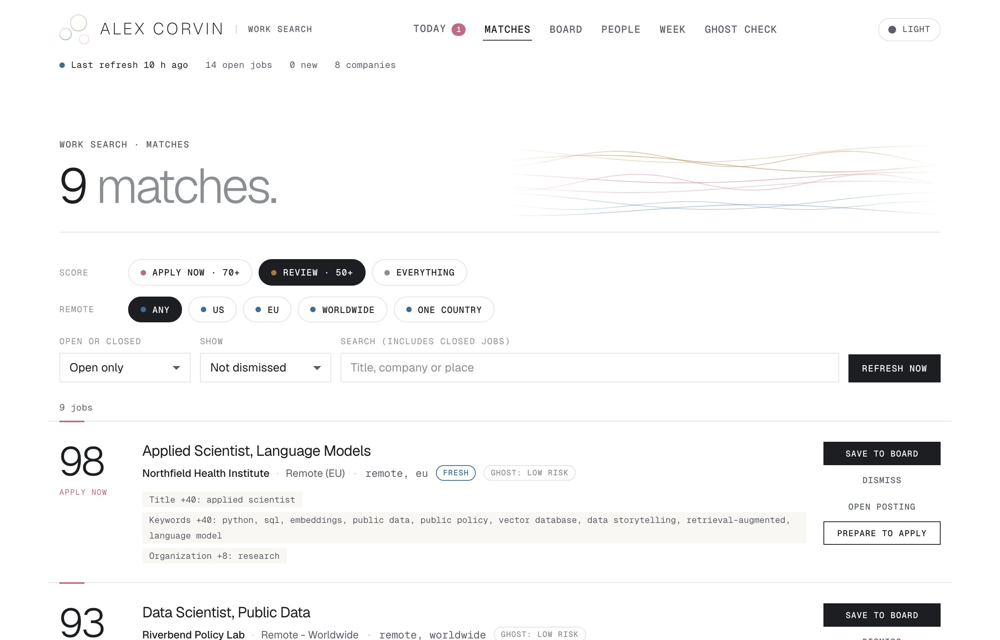
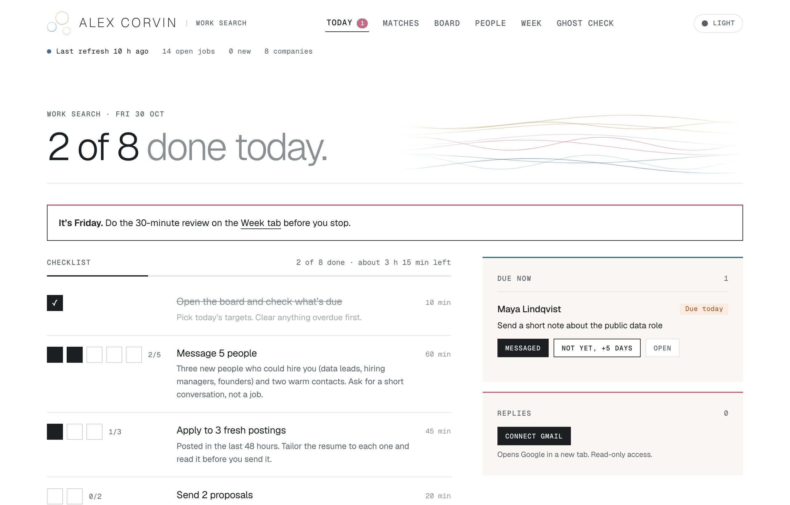
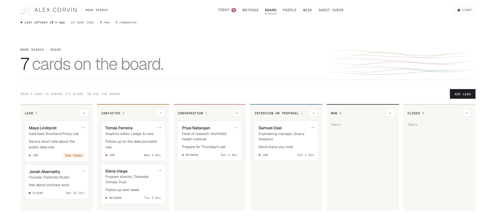
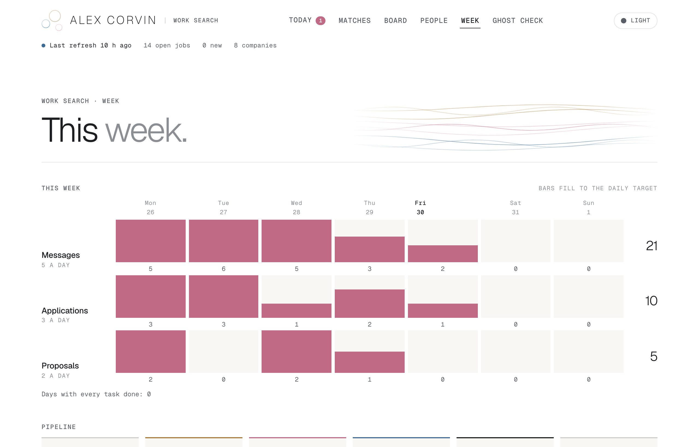
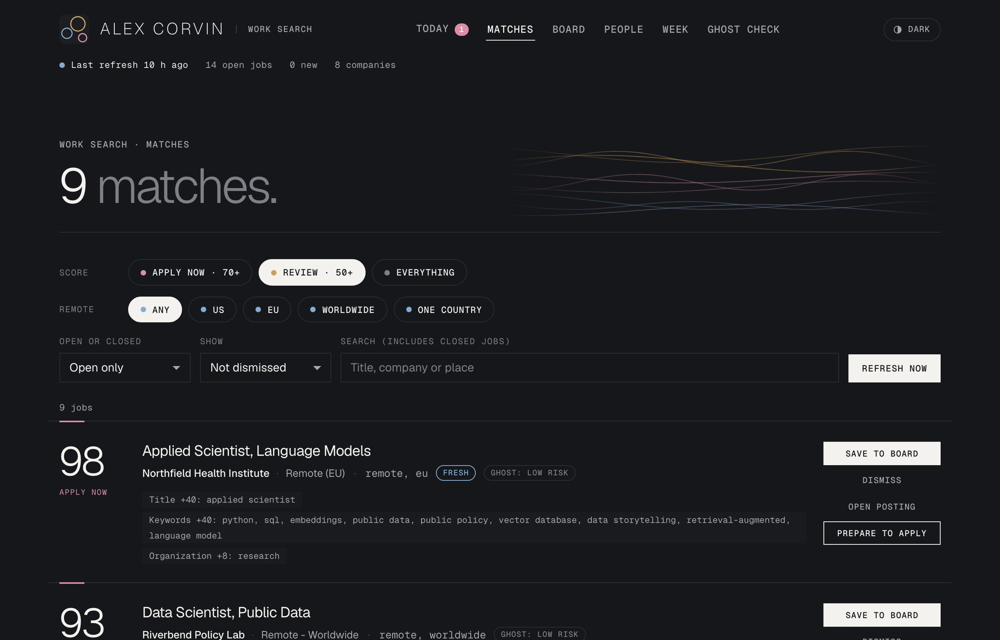

A private tool that finds data work, ranks it by rules I can read, and runs my day from one screen
I wanted to find out whether a small tool of my own could replace hours of searching job boards each day, which bury new postings and miss roles that combine several skills, and whether it could also keep me writing to the people who hire for those roles, since an application with no person behind it is easy to ignore.
Most organizations publish their open roles through a hiring platform that offers a public feed. Work Search reads those feeds directly every morning, so it sees a posting within a day of it going up, notices when one is taken down, and does not depend on how a job board ranks its listings. If one feed fails, the others still run.
Remote in the US, the EU or worldwide, or anywhere in Spain. Any other posting is dropped here.
Points for title, skills, organization and contract work, each with a written reason.
Old, reposted or vague postings are labeled, and none are hidden.
The tool can prepare a resume or a note, which I edit and send myself.
Each score is a sum of points, and every point comes with a written reason. No language model is involved, so the same posting always receives the same score, and when I disagree with a score I change a line in a settings file. The two postings below are invented, and they are scored with the real rules.
| Strong title matchdata scientist | +40 |
| Skills in the descriptionPython, SQL, D3, data visualization, open data | +32 |
| Mission-driven organizationresearch | +8 |
| Open to anywhere | +5 |
| Score Apply now | 85 |
| Medium title matchresearch associate | +25 |
| Skills in the descriptionPython, SQL, survey, evaluation | +17 |
| Mission-driven organizationresearch | +8 |
| US-only remoteusually means living in the US | −5 |
| Score Low | 45 |

Each skill adds its weight once, up to 40 points in total. Words about seniority add nothing. Phrases such as "security clearance" or "must reside in the United States" each take 10 points off. A score of 70 or more means apply now, and a score of 50 or more means the posting is worth reviewing.
A posting that has been up for months, has been reposted, leaves out its pay when the same organization's other roles include it, or says almost nothing specific is more likely to be stale. The tool adds up those signals and labels the posting. It does not hide any posting, because a label can be wrong and I would rather check it myself.
The daily checklist asks for five messages, three of them to people I have not spoken to before, along with three applications and two proposals. A board tracks every lead from first contact to interview and shows who is due a follow-up that day. A draft screen writes a short note to a named person about a named role, at a length that suits LinkedIn or email.


After a draft comes back, plain code checks it for stock phrases, exclamation marks, sentence fragments, stiff wording, length, and any number that does not appear in my resume. The check only flags problems and does not rewrite anything, so the final text is always mine.
On Fridays the checklist asks for a 30-minute review. The Week screen shows each day's messages, applications and proposals against their daily targets, which makes a slow week easy to see. Every screen has a light and a dark theme.


Before anything is sent to a language model, my name, email, phone number and links are replaced with placeholders, and ordinary code puts them back afterward. If any personal detail is still present after the replacement, the prompt is not built at all, and a test checks this against a fictional resume. Posting text and my own notes are marked as data, and the instructions tell the model to ignore any commands they contain. The tool also works without an API key, because it can build the prompt for me to paste into a chat myself.
A scheduled macOS job runs the refresh at 7:00 each morning, and if the laptop was asleep, the app runs it when I next open it. A lock file stops two refreshes from running at the same time, and the status line shows when the last run failed or when none has finished in a day.
They run in about two seconds without a network connection, and they cover location parsing, scoring, every feed parser against saved real responses, the board's date rules, the privacy checks and the email matching.
I ran the real feeds and the morning job, and I checked every screen in a browser at desktop and phone widths in both themes.
The model API call, the optional read-only Gmail sync that suggests moving a card when someone replies, and one hiring platform whose server blocked my requests.
I do not yet know whether the tool changes how many replies I receive, because that needs several more weeks of use.